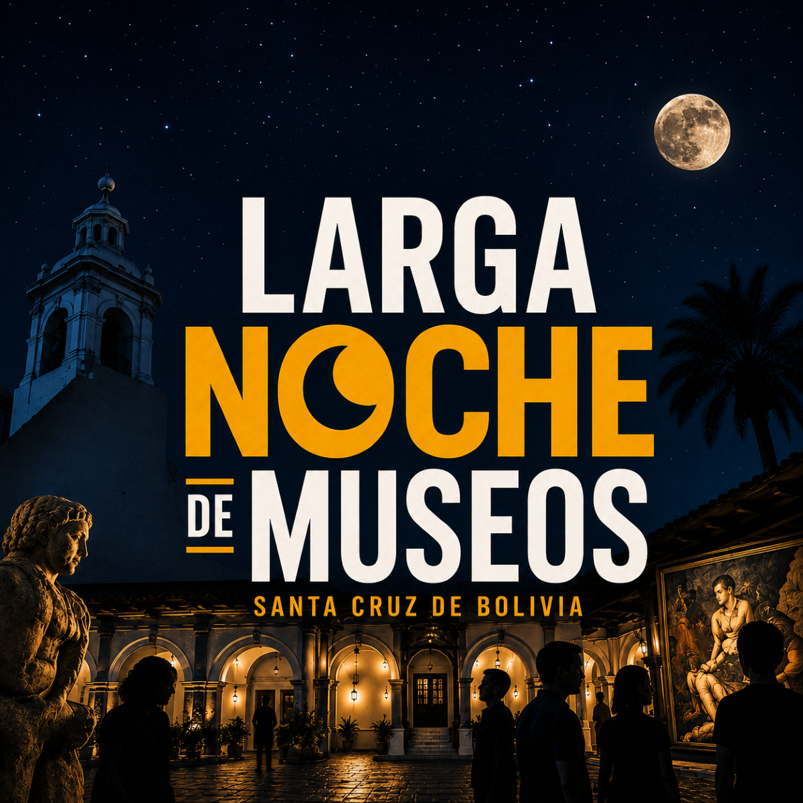
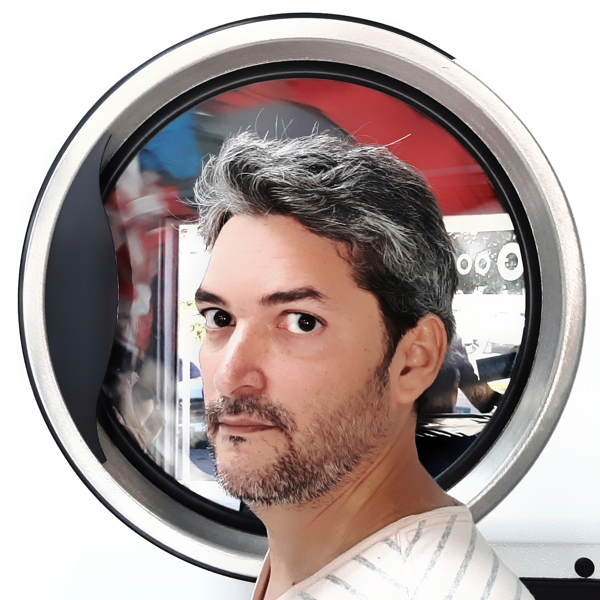

Santa Cruz de la Sierra · 2026

Un recorrido sonoro por las calles, patios, terrazas y museos del centro de Santa Cruz de la Sierra — la noche que una ciudad volvió a encontrarse consigo misma.
Escuchar
La ciudad que muchos dicen que se apagó hace años, esta noche vuelve a respirar. Narración + entrevistas + diseño sonoro documental.
El 16 de mayo de 2026, durante la edición anual de la Larga Noche de Museos en Santa Cruz de la Sierra, un pequeño equipo de cinco personas salió a la calle con micrófonos y grabadoras. La misión: escuchar lo que la ciudad tenía para decir sobre sí misma.
El resultado es este podcast documental: un recorrido por Zarao, Kiosco, la Casa de Gladys Moreno, el Altillo Beni, Casa Patiño, Manzana 1 y varios espacios entre medias; nueve voces distintas que juntas trazan el retrato de una ciudad que, por una sola noche, recuerda que puede encontrarse consigo misma.
El podcast fue concebido, producido y editado en el marco del taller Sonar Distinto, que exploró la escucha como práctica cultural y la creación sonora como forma de documentar la experiencia urbana.
Marco institucional
Voces de la noche
Jacob ZapataFundador de Zarao — Identidad y Tradición
FlorenciaArtista visual, docente y coordinadora de Kiosco Galería
Lucía AliagaComunicadora e ilustradora · Espacio Infinito / Casa Gladys Moreno
Fabricio16 años · Bailarín de ballet folclórico · Ballet Almanlegüera
Dayana Méndez20 años · Estudiante de Turismo · Voluntaria en el Altillo Beni
Diana Caballero25 años · Abogada · Zona Roca y Coronado
EdgarProfesor universitario · Cuarto Anillo, Santa Cruz
Siria UsecheArquitecta y asesora inmobiliaria · Vive en el centro
María José CamposArquitecta, urbanista y gestora cultural · Plataforma Rutas y Rastros
LucianaLicenciada en Marketing · Uruguó
Carlos38 años · Músico callejero y artesano · Los Pozos
Mari55 años · Vendedora ambulante · Plan 4000
Luis Algarayaz67 años · Consultor · Santa Cruz
Cielo Nicole NaranjoEstudiante de marketing · Entre el 8° y el 39° anillo
Leonardo32 años · Profesor de inglés · Octavo anillo
María René26 años · Abogada · Secundarillo · Manzana 1
GuardiaCentro de la Cooperación Española — AECID, Santa Cruz
Audio
Quiénes somos

Alejandro Sosa
Narrador · Entrevistas · Producción · Edición
Emprendedor multidisciplinario radicado en Santa Cruz de la Sierra. Fundador de Statetty (PropTech) y ekvilibroLab (innovación alimentaria), host del podcast Somos 10⁷. Formado en ingeniería de software, ha trabajado en transformación digital pública y privada en Venezuela y Bolivia durante más de 25 años. Combina pensamiento sistémico con ejecución creativa en proyectos que atraviesan tecnología, cultura y comunidad.
Luciana Flores
Equipo de producción
Participa en este podcast como parte del equipo de producción formado durante el taller Sonar Distinto. Su perfil completo estará disponible pronto.
Cielo Nicole Naranjo
Equipo de producción
Estudiante de marketing con un vínculo personal con las artes visuales. Forma parte del equipo creativo que documentó sonoramente la Larga Noche de Museos 2026. Su perfil completo estará disponible pronto.
Juan Harriague
Equipo de producción
Integrante del equipo de producción del podcast, formado en el marco del taller Sonar Distinto de la AECID en Santa Cruz de la Sierra. Su perfil completo estará disponible pronto.
José Gabriel Vargas
Equipo de producción
Forma parte del equipo que recorrió el centro de Santa Cruz durante la Larga Noche de Museos capturando el sonido de la ciudad. Su perfil completo estará disponible pronto.